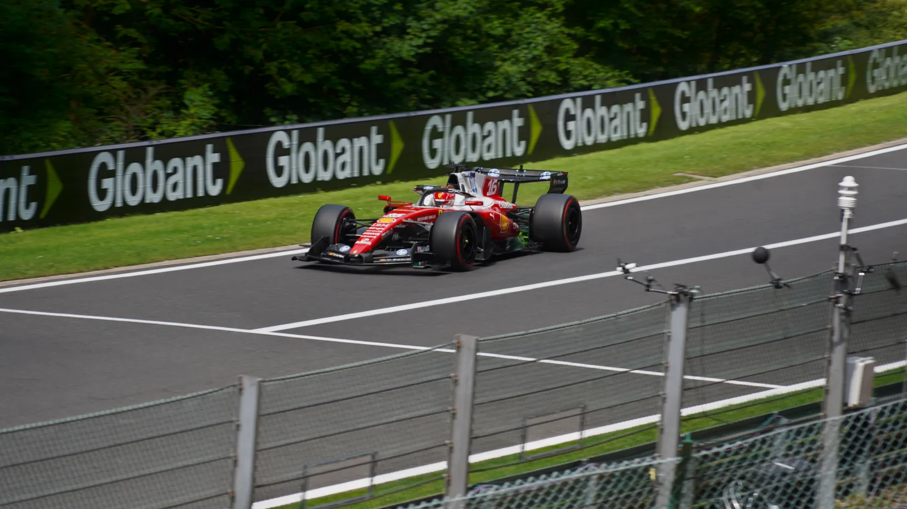

▲ 2026시즌 페라리 SF-26. 2027년부터는 이 차체 어딘가에 라쿠텐 로고가 새로 자리잡게 된다(사진은 2026 벨기에 GP, 샤를 르클레르) ⓒ Der Alf / Wikimedia Commons
축구 유니폼 위를 누비던 그 이름이, 이번엔 시속 300km로 달리는 차체 위에 오른다.
스쿠데리아 페라리가 일본 이커머스·핀테크 기업 라쿠텐(Rakuten)과 2027년 1월 1일부터 시작되는 다년간의 글로벌 파트너십을 체결했다고 발표했다. 라쿠텐은 통신·이커머스 부문의 팀 파트너(Team Partner)로 참여하며, 이 카테고리에 일본 기업이 페라리와 손잡는 건 이번이 처음이다.
1. 무엇을 발표했나
페라리의 레이싱 부문 최고수익책임자(CRRO) 로렌초 조르제티는 이번 계약을 두고 "강력한 글로벌 존재감과 혁신에 대한 믿음을 공유하는 두 브랜드가 만나는 기회"라고 밝혔다. 그는 이어 "라쿠텐은 뛰어난 디지털 생태계와 기술 역량을 보유하고 있으며, 이는 서킷 밖에서도 새로운 가치를 창출할 방법을 열어줄 것"이라고 덧붙였다.
양사는 라쿠텐의 통신 솔루션 사업인 라쿠텐 심포니(Rakuten Symphony)를 포함해, F1의 글로벌 네트워크를 활용한 신규 사업 기회도 함께 모색할 계획이라고 밝혔다.
| 항목 | 내용 |
|---|---|
| 발표일 | 2026년 9월 17일 |
| 계약 개시 | 2027년 1월 1일 |
| 파트너십 카테고리 | 통신 & 이커머스 부문 팀 파트너 |
| 노출 영역 | F1 경주차, 드라이버 레이싱슈트, 팀 시설 |
| 계약 규모 | 비공개 |
▲ 라쿠텐 창업자 겸 회장 미키타니 히로시. 2025년 모바일 월드 콩그레스(MWC) 현장에서 ⓒ Xuthoria / Wikimedia Commons
2. 타이틀 스폰서는 아니다 — 정확한 지위 짚기
이번 계약은 '팀 파트너' 등급으로, F1 스폰서십 위계에서 최상위인 타이틀 파트너와는 다르다. 현재 스쿠데리아 페라리의 타이틀 파트너 격은 별도로 존재하며, 라쿠텐은 그 아래 단계에서 통신·이커머스라는 특정 카테고리를 배타적으로 확보하는 구조다.
그럼에도 업계에서 이 계약을 주목하는 이유는 노출 범위에 있다. 단순 배너 광고가 아니라 경주차 차체, 드라이버가 착용하는 레이싱슈트, 팀 시설까지 브랜드가 걸리는 만큼, 사실상 페라리 F1 팀의 '얼굴' 일부를 차지하게 되는 셈이다.
📍 라쿠텐, F1이 처음은 아니다
라쿠텐은 이미 굵직한 스포츠 스폰서십 이력을 갖고 있다. 2017-18 시즌부터 2021-22 시즌까지 FC 바르셀로나의 메인(프론트) 스폰서로, 리오넬 메시·네이마르·루이스 수아레스가 뛰던 시기 유니폼 정면에 라쿠텐 로고가 새겨졌다. 축구에서 쌓은 글로벌 스포츠 마케팅 경험을 이번엔 F1으로 확장하는 모양새다.
3. 왜 하필 페라리였나
페라리는 F1에서 가장 오래되고 상징성이 큰 팀이다. 1950년 F1 원년 시즌부터 참가해온 유일한 팀으로, 전 세계 모터스포츠 팬층 중에서도 브랜드 충성도가 가장 높은 축에 속한다. 라쿠텐 입장에서는 유럽·아시아를 아우르는 F1의 글로벌 시청자층에, 축구와는 또 다른 결의 프리미엄 이미지를 더할 수 있는 파트너로 페라리를 택한 셈이다.
반대로 페라리 입장에서는 서킷 밖 디지털 생태계와의 접점 확대가 매력적인 요소로 꼽힌다. 라쿠텐의 이커머스·핀테크·통신 인프라를 통해 팬 참여형 콘텐츠나 신규 커머스 모델을 실험할 여지가 생기기 때문이다.

▲ 페라리는 F1뿐 아니라 로드카 브랜드로도 세계 최고 수준의 인지도를 갖고 있다. 사진은 최신 V12 모델 12칠린드리 ⓒ Wikimedia Commons

▲ 이번 파트너십으로 라쿠텐은 F1 트랙뿐 아니라 페라리의 프리미엄 브랜드 이미지 전반에 접점을 넓히게 됐다 ⓒ Wikimedia Commons
4. 아직 확인되지 않은 것들
✅ 앞으로 지켜볼 변수
· 계약 금액 — 양사 모두 공식적으로 규모를 밝히지 않았다
· 로고 노출 구체 위치 — 차체의 어느 부위(사이드포드·에어박스 등)에 배치될지는 2027년 시즌 차량 공개 시 확인 가능
· F1 외 확장 여부 — 라쿠텐 심포니 등 통신 솔루션 사업과의 연계가 실제 어떤 형태로 구체화될지
이번 파트너십에 대한 페라리 측 공식 입장은 GP코리아 기사에서 확인할 수 있다. GP코리아 원문 기사 바로가기
5. 요약
스쿠데리아 페라리가 일본 라쿠텐과 2027년 1월 1일부터 시작되는 다년간 F1 글로벌 파트너십을 체결했다. 라쿠텐은 통신·이커머스 부문 팀 파트너로 참여하며, F1 경주차와 드라이버 레이싱슈트, 팀 시설에 로고가 노출된다.
타이틀 파트너는 아니지만, 노출 범위가 넓어 업계의 주목을 받고 있다. 라쿠텐은 과거 FC 바르셀로나 메인 스폰서로 활동한 이력이 있으며, 이번 계약은 그 스포츠 마케팅 경험을 F1으로 확장하는 행보로 풀이된다. 계약 금액 등 세부 조건은 아직 공개되지 않았다.